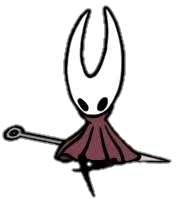

Personagens. (imagens tiradas do site hollowknight fandom)
Rei palido: O rei pálido foi o criador e o rei de hallownest tendo como sua filha hornet junto de herrah a besta ele era um rei extremamente adorado por todos de seu reino
até o surgimento da infecção causada pela radiancia ele decidiu criar os receptaculos como modo preventivo para parar essa infecção sempre buscando tornar seu reino eterno.
Radiancia: Uma deusa antiga que habita no mundo dos sonhos tendo criado as mariposas como suas seguidoras e filhas dando a elas a habilidade de vagar entre o munco fisico
e o mundo dos sonhos mas que a muito tempo foi esquecida por causa da influencia do rei palido e agora retornando como a infecção invadindo a mente dos insetos e fazendo com que se tornem selvagem.
Cavaleiro vazio: O receptaculo perfeito o unico entre muitos receptaculos criados que conseguiu ser bem sucedido em ser completamente vazio dentro todos os milhões de receptaculos
criados não tendo sentimento e nem pensamentos sendo o responsavel por tentar selar a radiancia para todo o sempre mas falhando por que durante seu treinamento com o rei palido ele deixou de ser completamente vazio pois acabou criando um laço
com o rei palido.
 Hornet: Hornet é a filha do rei pálido junto de herrah a besta sendo princesa de hallownest e tambem do ninho profundo se tornando uma guardião do reino e uma guerreira muito habilidosa que
utiliza de agulha e linha para o combate sendo muito agil no campo de batalha buscando sempre proteger o que restou do que outrora foi o reino de hallownest da infecção.
Cavaleiro: Um receptaculo sem nome que a comunidade decidiu nomear apenas de cavaleiro um dos muitos receptaculos falhos criados pelo rei palido na tentativa de criar um receptaculo
completamente vazio não sabendo o que ele é ou o que ele deveria fazer ele apenas encontra hallownest e começa sua aventura sem ter noção do que acontecera pelo que se segue em sua viajem.
Herra a besta: A Rainha de ninho profundo tendo como filha Hornet junto do rei palido ela era uma rainha adorada e ao mesmo tempo temida por seus inimigos após tantos anos de resistencia contra
o reino de hallownest a Rainha decidiu ajudar o rei palido em seu plano em troca de que ele desse a ela uma herdeira já que a muito tempo o rei de ninho profundo havia morrido e não havia nenhum outro inseto nobre o suficiente para lhe conceder
uma herdaira e logo após ter sua exigencia atendida se juntou como uma sonhadora para o plano do rei palido de sela a infecção.
Monomon a professora: Uma grande estudiosa que buscava entender todos os aspectos do mundo em que vive tendo criado o plano para selar a infecção e tendo passado ele para o rei palido ela
foi a primeira a se tornar uma sonhadora mas tambem foi a primeira a perceber as falhas no plano percebendo que o selo criado por eles não foi o suficiente e que precisa ser ddesfeita e então aguarda calmamente em seus arquivos até que alguem
apareca para destruila e então quebrar o selo para que então seja possivel destruir a infecção.
Lurien o observador: Um seguidor avido do rei palido que trabalhava observando a capital do reino de hallownest para manter a ordem no reino na ausencia do rei após as outras duas sonhadoras
estarem decididas o rei palido reccorreu a ele para ser seus olhos e sua vontade dentro do mundo dos sonhos pois o rei tinha uma confiança da lealdade de lurien a qual não podia ter com as outras então ele agia como um mediador entre o rei e as
sonhadoras no mundo dos sonhso já que sua lealdade com o rei era inabalavel.